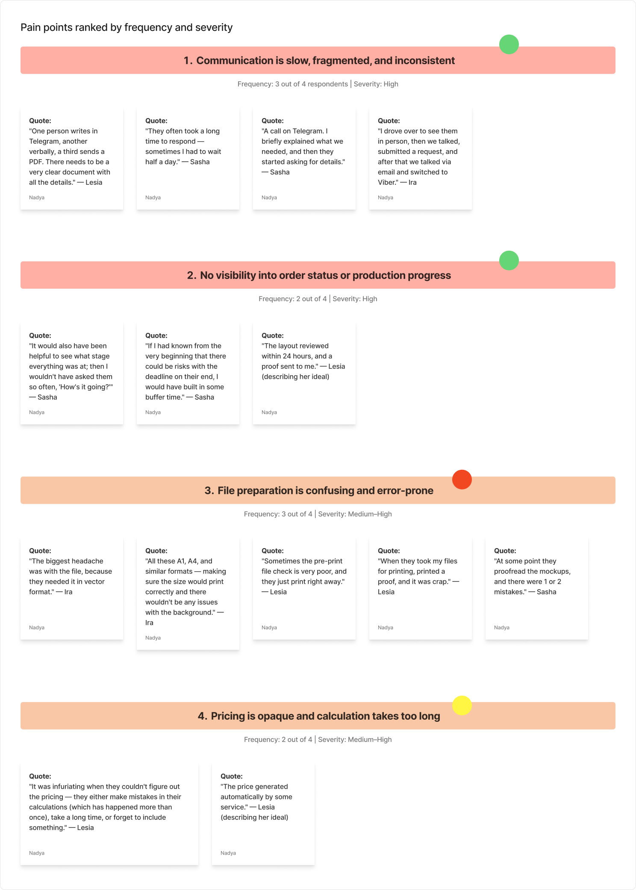
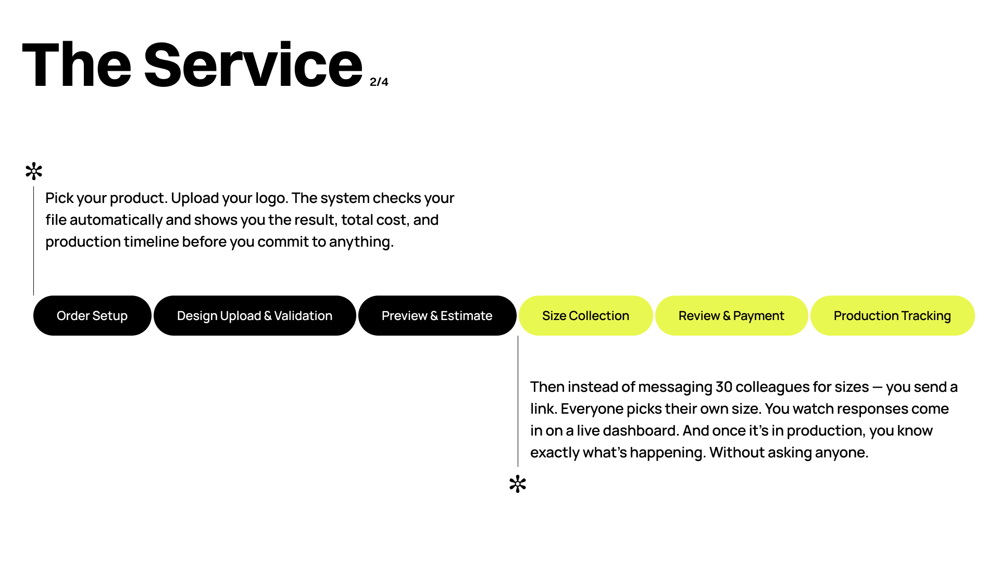
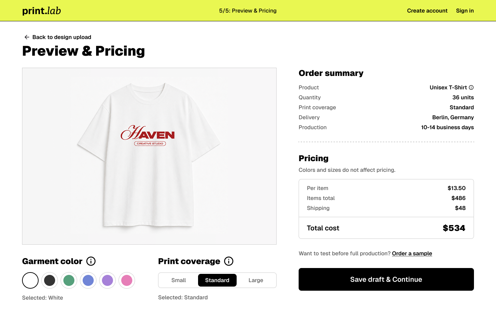
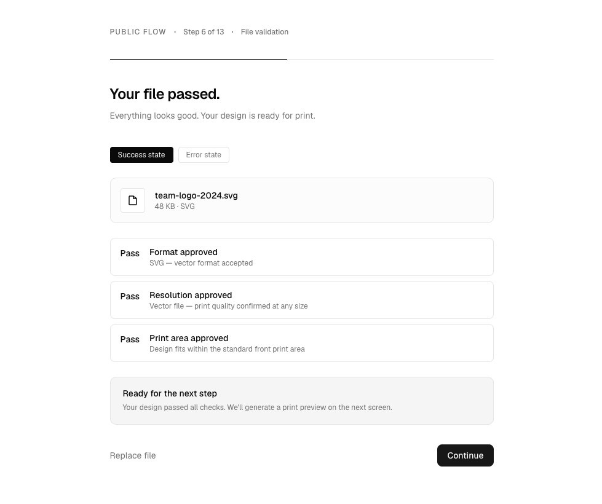
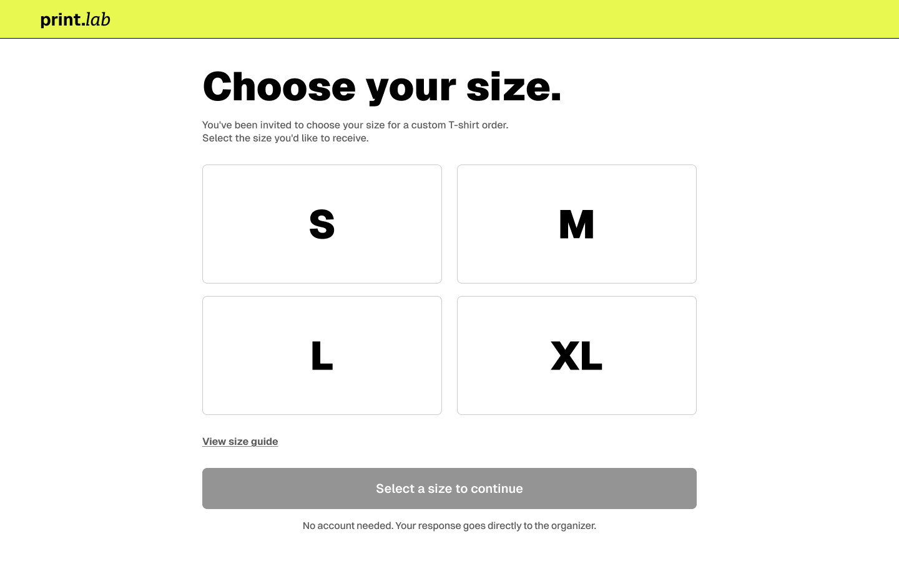
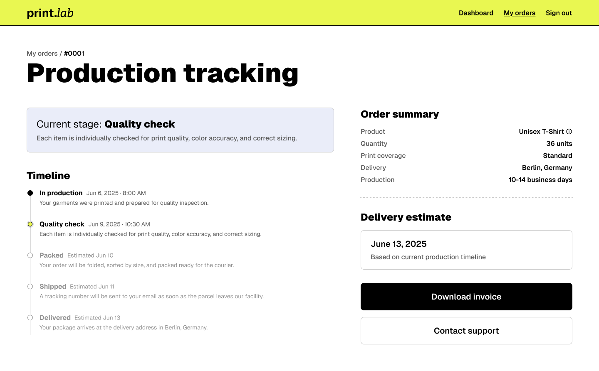

print.lab
Custom merchandise ordering for teams. Design test assignment.

- Constraint
- A take-home test assignment. No engineering, no existing product, no live users to test against.
- Decision
- Put every step that helps someone decide before any step that asks something of them.
- Trade-off
- Never tested. The research is real; validation of the design is the missing half.
- Role
- Sole designer, end to end
- Context
- A company's design test assignment, not client work
- Process
- Task analysis, 4 user interviews, market research, persona and CJM, user flow, wireframes, key screens
- Outcome
- Passed the take-home; invited to the next round of interviews.
[ 01 ]Why this is on the site
My other case studies are enterprise work, where the problem arrives partly defined, research is shared with analysts, and I inherit constraints from systems that already exist. That is the reality of the work and I would not hide it.
This project is the counterweight. I ran the research myself, defined the problem myself, decided what to build and what to leave out, and designed it. It is a concept, not a shipped product, and it is labelled as one.
[ 02 ]The problem
Diana is an HR manager handling merchandise for a large IT company. Ordering team apparel means collecting sizes from more than 250 people over Slack, chasing a vendor on Telegram for updates, and hoping nothing went wrong with a logo file she did not know was the wrong format. Orders take months. The process is chaotic and stressful.
Three things make it painful, and they are different kinds of problem:
- Collection. Getting one piece of information from hundreds of people, one conversation at a time.
- Uncertainty. No visibility into cost, timeline or file suitability until it is too late to change anything.
- Silence. Once it is with the vendor, the only way to know anything is to ask.
[ 03 ]How I got there
Task analysis first, to map what ordering merchandise actually involves before assuming where the pain was. Then four user interviews — a freelance designer running a client's 70-person order, an IT team lead ordering for a team of 30, and two smaller B2C buyers — and market research across existing print and merchandise services.
The pains ranked cleanly, and the top of the list was not what a print service usually optimises for. The dominant complaint was communication — slow, fragmented, no single source of truth: "One person writes in Telegram, another verbally, a third sends a PDF." Close behind came no visibility into production, then file preparation that failed late and expensively. Opaque pricing, informal approval chains and unclear sizing followed. The flashier complaints — dated design tools, limited customisation — sat at the bottom, and came only from the individual buyers.

One root cause ran under almost every complaint: print shops operate like workshops, not products — manual, reactive, relationship-dependent.
That reframed the brief. The opportunity was not a slicker design tool; it was replacing the back-and-forth with a structured, transparent, self-service flow that still feels personal. So I designed for the organiser — the person coordinating an order for a whole team — and deliberately deferred the B2C features that only individual buyers had asked for: AI design generation, live colour-accuracy previews, richer customisation. Coordination was the pain; design tooling was not. Deciding what not to build was as much of the work as deciding what to.
From there: persona and customer journey map, product concept and feature prioritisation, then user flow, wireframes, and the key screens designed in high fidelity by hand.
[ 04 ]The product
Six stages: order setup, design upload and validation, preview and estimate, size collection, review and payment, production tracking. Four parts of it carry the actual argument.

Commitment comes last
The buyer configures the product, enters quantity and delivery, uploads and validates the design file, reviews the preview and sees the full cost and timeline, and only then creates an account.
Every step that helps someone decide happens before any step that asks something of them. Friction goes after value, never before it.
There is also a branch for ordering a physical sample at cost price, which loops back to the start of the flow. A screen can show a mockup of a printed garment. It cannot show what the print actually looks like on fabric, and that is the one thing worth spending real time and money to find out before committing to 250 units.

The file gets checked before you commit
Upload the design and the system validates it immediately. If it fails, the issue is named and the file goes back for a fix and reupload, looping until it passes. Only a valid file moves forward to preview and estimate.
The failure in the original story is not that the logo file was wrong. It is that nobody found out until late, after decisions had been made assuming it was fine. Moving validation to the front converts an expensive late failure into a cheap early one.

[ 05 ]Sizes are collected by link, not by conversation
Instead of messaging 250 people individually, you send one link. Each person picks their own size. Responses appear on a live dashboard with a running count, and anyone still pending can be assigned manually.
The decision that matters here: recipients do not need an account. They open the link, tap a size, and they are done. Any friction added to the recipient's side gets multiplied by 250 and lands back on the organiser as chasing.
The person with the problem is Diana, but the person the interface has to be effortless for is everyone else.

[ 06 ]Production is visible without asking
A tracking timeline shows the current stage, what has happened, and estimated dates for what has not, alongside a delivery estimate. Milestone alerts go out by email as production progresses, so status arrives rather than having to be fetched.
Chasing a vendor on Telegram is not a communication problem, it is a design problem. Status that has to be requested is status the system already holds and chose not to show.

What I would have measured
This never met a real order, so these are the metrics I would have instrumented, not results — one strong test for each of the three problems, and the number a business would actually watch.
The north star: organiser hours spent per order. Every problem below is a tax on the organiser's time — chasing sizes, second-guessing cost, chasing the vendor. Drive that number down and the platform scales without adding support staff. It is the metric a stakeholder would care about, and the one that ties the rest together.
- Collection — the share of recipients who submit a size without being chased, and the time from sending the link to a full set. Does one link actually replace 250 conversations?
- Uncertainty — the share of orders where cost and timeline are seen before the account and payment — a direct test of "commitment comes last" — and how early a bad file is caught, measured as steps remaining before commitment. An expensive late failure should become a cheap early one.
- Silence — the share of orders where the organiser never has to contact support or the vendor for a status update. That absence is the cleanest proof that status arrives rather than having to be fetched.
[ 07 ]Limits
This is a concept. No engineering reviewed it for feasibility, no usability testing was run on the final screens, and none of it has met a real order.
The research is real: four interviews and market analysis. What is missing is the second half of the loop, where the design goes back to those users and is tested rather than shown.